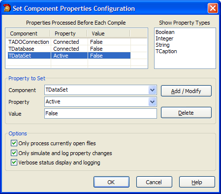

Set Component Properties |
  
|
Set Component Properties |
|
This tool waits in the background until you compile a project. It then scans the current project's forms to check for components with certain properties and changes those properties to a defined value. This tool is useful to deactivate datasets or database connections before you compile your applications, but it can be used for any similar situations as well. To activate the scanning, enable the checkbox next to this expert in the GExperts Configuration screen.
To add a new component class and property to search for, enter those values in the Property to Set area. Then type in the desired value of the property as the Value text (see Property Value Constants for details). Finally, click Add to add that property rule to the stored list of rules. To edit an existing property rule, select it in the list, make your changes, and click Modify. To delete a property rule, select the property in the list and hit Delete.
The property types that are listed in the property dropdown can be edited using the context menu in the Property Types area. You can add and remove property types to show only those you are interested in seeing.
Options:
•Only process currently open files: Only scan project forms that are currently open in the IDE. It is recommended that you keep this option enabled because it results in much faster scanning, because GExperts will not need to open a potentially large number of forms into the IDE for larger projects.
•Only simulate and log property changes: Do not actually change the value of any properties - just log the changes that would be made. This is useful for testing new property rules, to be sure they have the intended effect.
•Verbose status display and logging: This enables detailed logging of each property that is changed and enables the display of a small status window while the forms are being scanned for property changes. The log details are output to the IDE's message view. Note that important messages such as non-existent properties or errors while setting a property are always reported regardless of this setting.
